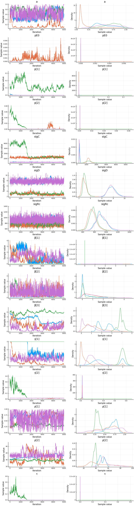
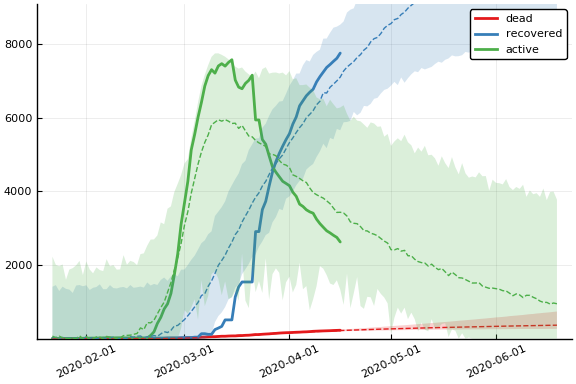
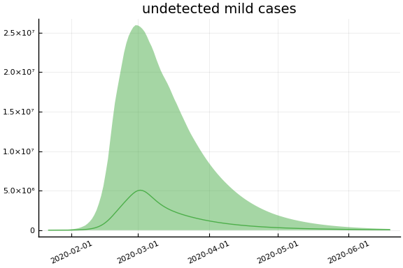
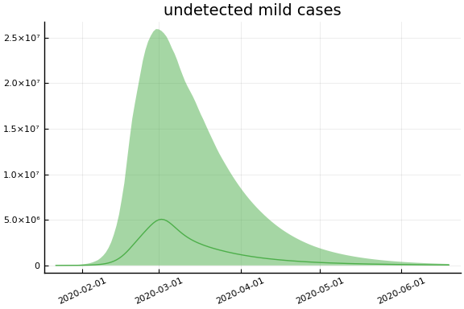
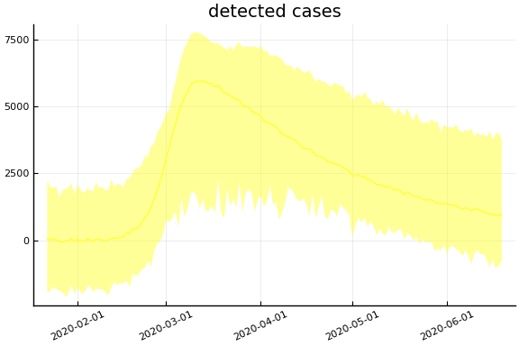
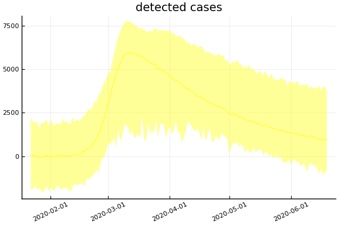
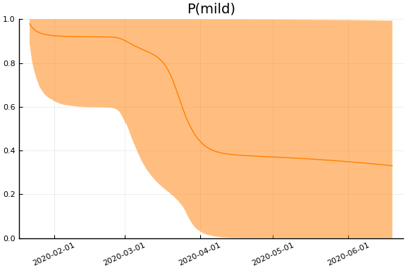
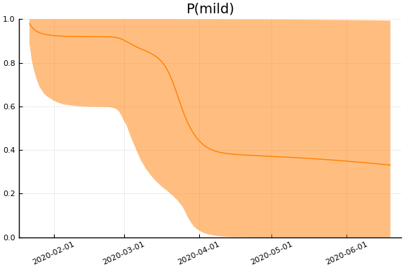

This work is licensed under a Creative Commons Attribution-ShareAlike 4.0 International License
using CovidSEIR, Plots, DataFrames, JLD2, StatsPlots
Plots.pyplot()
jmddir = normpath(joinpath(dirname(Base.find_package("CovidSEIR")),"..","docs","jmd"))
covdf = covidjhudata();
South Korea¶
korea = CountryData(covdf, "Korea, South")
CountryData{Float64,Int64}(5.1635256e7, [1, 2, 3, 4, 5, 6, 7, 8, 9, 10 …
64, 65, 66, 67, 68, 69, 70, 71, 72, 73], [0.0, 0.0, 0.0, 0.0, 0.0, 0.0, 0.0
, 0.0, 0.0, 0.0 … 126.0, 131.0, 139.0, 144.0, 152.0, 158.0, 162.0, 165.0,
169.0, 174.0], [0.0, 0.0, 0.0, 0.0, 0.0, 0.0, 0.0, 0.0, 0.0, 0.0 … 3730.
0, 4144.0, 4528.0, 4811.0, 5033.0, 5228.0, 5408.0, 5567.0, 5828.0, 6021.0],
[1.0, 1.0, 2.0, 2.0, 3.0, 4.0, 4.0, 4.0, 4.0, 11.0 … 5281.0, 4966.0, 466
5.0, 4523.0, 4398.0, 4275.0, 4216.0, 4155.0, 3979.0, 3867.0])
using Turing
mdl = CovidSEIR.TimeVarying.countrymodel(korea)
cc = Turing.psample(mdl, NUTS(0.65), 5000, 4)
import JLD2
JLD2.@save "$jmddir/korea_tv_$(Dates.today()).jld2" cc
JLD2.@load "$jmddir/korea_tv_2020-04-03.jld2" cc dayt0;
Estimates¶
plot(cc)

describe(cc)
2-element Array{ChainDataFrame,1}
Summary Statistics
parameters mean std naive_se mcse ess r_hat
────────── ──────── ──────── ──────── ────── ──────── ──────
a 0.3318 0.1198 0.0009 0.0055 202.5444 1.0440
pE0 0.0000 0.0000 0.0000 0.0000 127.1879 1.0589
p[1] 0.0406 0.0278 0.0002 0.0020 64.2570 1.8436
p[2] 0.1086 0.1981 0.0016 0.0138 64.2570 1.6839
sigC 263.1219 61.4888 0.4861 4.3856 64.2570 1.7283
sigD 7.3173 1.4366 0.0114 0.0928 64.2570 1.4225
sigRc 635.9013 103.0874 0.8150 6.7176 64.2570 1.4837
β[1] 0.3423 0.1827 0.0014 0.0112 70.1779 1.3082
β[2] 0.0660 0.1728 0.0014 0.0090 86.6956 1.2103
β[3] 0.5721 0.4471 0.0035 0.0193 203.7240 1.0716
γ[1] 0.0070 0.0096 0.0001 0.0008 64.2570 2.6411
γ[2] 0.1350 0.1560 0.0012 0.0100 65.7633 1.3472
ρ[1] 0.9966 0.0089 0.0001 0.0003 554.6391 1.0362
ρ[2] 39.5956 0.9166 0.0072 0.0482 98.0607 1.1285
τ 0.8106 0.8588 0.0068 0.0374 391.5204 1.0285
Quantiles
parameters 2.5% 25.0% 50.0% 75.0% 97.5%
────────── ──────── ──────── ──────── ──────── ────────
a 0.2026 0.2501 0.2998 0.3734 0.6811
pE0 0.0000 0.0000 0.0000 0.0000 0.0000
p[1] 0.0008 0.0027 0.0483 0.0599 0.0842
p[2] 0.0014 0.0019 0.0024 0.1507 0.6727
sigC 188.9998 218.0311 239.0684 309.5063 401.1423
sigD 4.9916 6.1158 7.3347 8.3122 10.2576
sigRc 476.9011 559.0011 614.9013 710.2584 855.0331
β[1] 0.0153 0.2023 0.3449 0.4805 0.6640
β[2] 0.0000 0.0003 0.0010 0.0243 0.6046
β[3] 0.0313 0.2425 0.4611 0.8003 1.6856
γ[1] 0.0000 0.0003 0.0009 0.0203 0.0237
γ[2] 0.0383 0.0546 0.0680 0.1152 0.6220
ρ[1] 0.9813 0.9968 0.9986 0.9995 0.9999
ρ[2] 37.8331 38.9631 39.5679 40.1664 41.5414
τ 0.2153 0.3125 0.4618 0.8724 3.4682
Fit¶
sdf = simtrajectories(cc, korea, 1:150)
f = plotvars(sdf, korea, dayt0=dayt0)
plot!(f.fit, xlim=nothing)

We see that the model does not fit the rapid drop in new cases in South Korea. This may be caused by the model’s implausible assumption that transmission and testing rates are constant over time.
Implications¶
for fig in f.trajectories
display(plot(fig, xlim=nothing))
end

 
 
 



 
